Estimation of normal probabilities
For 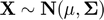 , we will estimate the following probability:
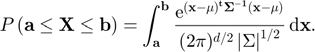
We will approximate this probability using cubSobol_g and meanMC_g GAIL methods. These are quasi-Monte Carlo and IID Monte Carlo algorithms. In order to facilitate the computations when  is high (~1000), we are going to apply a special transformation of the integrand proposed by Alan Genz.
is high (~1000), we are going to apply a special transformation of the integrand proposed by Alan Genz.
Contents
function demo_normal_probabilities
Basic integration parameters set up
For all the examples, the dimension of the problem will be 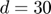. The user input tolerances are also set up below. abstol is the absolute error tolerance, and reltol the relative error tolerance. When reltol is set to 0, the algorithms use pure absolute error bound, and viceversa. Finally, for simplicity we define the mean of the distribution to be 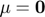:
d = 30; % Dimension of the problem abstol = 1e-3; % User input, absolute error bound reltol = 0; % User input, relative error bound mu = zeros(d,1); % Mean of the distribution
First test: (quasi-Monte Carlo cubSobol_g)
For this first example, we consider , and 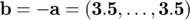. In this case, the solution of the integral is known so we can verify that the error conditions are met:
Sigma = eye(d); % We set the covariance matrix to the identity factor = 3.5; hyperbox = [-factor*ones(1,d) ; factor*ones(1,d)]; % We define the integration limits exactsol = (gail.stdnormcdf(factor)-gail.stdnormcdf(-factor))^d; % Exact solution of the integral % Solution approx_prob and integration output parameters in out_param [approx_prob,out_param] = multi_normcdf(hyperbox,mu,Sigma,abstol,reltol); disp('Test 1: cubSobol_g') disp(['Estimated probability with cubSobol_g is: ' num2str(approx_prob)]) disp(['The algorithm took ' num2str(out_param.time) ' seconds and '... num2str(out_param.n) ' points.']) disp(['Real error was ' ... num2str(abs(exactsol-approx_prob))... ' which is less than the user input tolerance '... num2str(gail.tolfun(abstol,reltol,1,exactsol,'max')) '.'])
Test 1: cubSobol_g Estimated probability with cubSobol_g is: 0.98614 The algorithm took 0.043901 seconds and 1024 points. Real error was 2.1316e-14 which is less than the user input tolerance 0.001.
Second test: (quasi-Monte Carlo cubSobol_g)
For this second example, we consider ( on the diagonal, 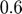 off the diagional), 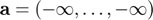, and 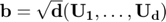 (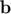 is chosen randomly). The solution for this integral is known too so we can verify the real error:
sig = 0.6; Sigma = sig*ones(d,d); Sigma(1:d+1:d*d) = 1; % We set the covariance matrix hyperbox = [-Inf*ones(1,d) ; sqrt(d)*rand(1,d)]; % We define the integration limits [exactsol , ~] = cubSobol_g(... @(t) prod(gail.stdnormcdf(bsxfun(@plus,hyperbox(2,:),... sqrt(sig)*t)/sqrt(1-sig)),2),... [-Inf;Inf],'normal',abstol/10^3,0); % Exact solution of the integral % Solution approx_prob and integration output parameters in out_param [approx_prob,out_param] = multi_normcdf(hyperbox,mu,Sigma,abstol,reltol); disp('Test 2: cubSobol_g') disp(['Estimated probability with cubSobol_g is: ' num2str(approx_prob)]) disp(['The algorithm took ' num2str(out_param.time) ' seconds and '... num2str(out_param.n) ' points.']) disp(['Real error was ' ... num2str(abs(exactsol-approx_prob))... ' which is less than the user input tolerance '... num2str(gail.tolfun(abstol,reltol,1,exactsol,'max')) '.'])
Test 2: cubSobol_g Estimated probability with cubSobol_g is: 0.40131 The algorithm took 0.03389 seconds and 2048 points. Real error was 8.4991e-05 which is less than the user input tolerance 0.001.
Third test: (quasi-Monte Carlo cubSobol_g)
For this last example, we consider the same covariance matrix as before but 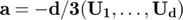, and 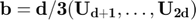 (both 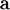 and are chosen randomly):
hyperbox = [-(d/3)*rand(1,d) ; (d/3)*rand(1,d)]; % We define the integration limits % Solution approx_prob and integration output parameters in out_param [approx_prob,out_param] = multi_normcdf(hyperbox,mu,Sigma,abstol,reltol); disp('Test 3: cubSobol_g') disp(['Estimated probability with cubSobol_g is: ' num2str(approx_prob)]) disp(['The algorithm took ' num2str(out_param.time) ' seconds and '... num2str(out_param.n) ' points.'])
Test 3: cubSobol_g Estimated probability with cubSobol_g is: 0.033683 The algorithm took 0.016304 seconds and 1024 points.
Third test with IID Monte Carlo (Monte Carlo meanMC_g)
We repeat the third test but we use the IID Monte Carlo algorithm instead:
C = chol(Sigma)'; % Alan Genz's transform parameters a = hyperbox(1,1)/C(1,1); b = hyperbox(2,1)/C(1,1); % Alan Genz's transform parameters s = gail.stdnormcdf(a); e = gail.stdnormcdf(b); % Alan Genz's transform parameters % Solution approx_prob and integration output parameters in out_param [approx_prob,out_param] = meanMC_g(@(n) f(s,e,hyperbox,rand(n,d-1),C),... abstol,reltol,'tbudget',5000); disp('Test 3: meanMC_g') disp(['Estimated probability with meanMC_g is: ' num2str(approx_prob)]) disp(['The algorithm took ' num2str(out_param.time) ' seconds and '... num2str(out_param.n) ' points.'])
Test 3: meanMC_g Estimated probability with meanMC_g is: 0.033441 The algorithm took 0.34445 seconds and 29368 points.
APPENDIX: Auxiliary function definitions
These two functions are defined for all the above test examples. multi_normcdf is a redefinition of cubSobol_g prepared to computed normal probabilites based on Alan Genz's transformation. f is the function resulting from applying Alan Genz's transform that that will be called in either cubSobol_g or meanMC_g.
function [p,out, y, kappanumap] = multi_normcdf(hyperbox,mu,Sigma,... abstol,reltol) % multi_normcdf computes the cumulative distribution function of the % multivariate normal distribution with mean mu, covariance matrix Sigma % and within the region defined by hyperbox. hyperbox = bsxfun(@minus, hyperbox,mu'); C = chol(Sigma)'; d = size(C,1); a = hyperbox(1,1)/C(1,1); b = hyperbox(2,1)/C(1,1); s = gail.stdnormcdf(a); e = gail.stdnormcdf(b); [p, out, y, kappanumap] = cubSobol_g(... @(x) f(s,e,hyperbox,x,C), [zeros(1,d-1);ones(1,d-1)],... 'uniform',abstol,reltol); end function f_eval = f(s,e,hyperbox,w,C) % This is the integrand resulting from applying Alan Genz's transformation, % which is recursively defined. f_eval = (e-s)*ones(size(w,1),1); aux = ones(size(w,1),1); y = []; for i = 2:size(hyperbox,2); y = [y gail.stdnorminv(s+w(:,i-1).*(e-s))]; aux = sum(bsxfun(@times,C(i,1:i-1),y),2); a = (hyperbox(1,i)-aux)/C(i,i); b = (hyperbox(2,i)-aux)/C(i,i); s = gail.stdnormcdf(a); e = gail.stdnormcdf(b); f_eval = f_eval .* (e-s); end end
end
References
[1] Fred J. Hickernell, Lluis Antoni Jimenez Rugama "Reliable adaptive cubature using digital sequences", Monte Carlo and Quasi-Monte Carlo Methods: MCQMC, Leuven, Belgium, April 2014 (R. Cools and D. Nuyens, eds.), Springer Proceedings in Mathematics and Statistics, vol. 163, Springer-Verlag, Berlin, 2016, arXiv:1410.8615 [math.NA], pp. 367-383.
[2] Fred J. Hickernell, Lan Jiang, Yuewei Liu, and Art B. Owen, "Guaranteed conservative fixed width confidence intervals via Monte Carlo sampling," Monte Carlo and Quasi-Monte Carlo Methods 2012 (J. Dick, F. Y. Kuo, G. W. Peters, and I. H. Sloan, eds.), Springer-Verlag, Berlin, pp. 105-128, 2014.
[3] Sou-Cheng T. Choi, Yuhan Ding, Fred J. Hickernell, Lan Jiang, Lluis Antoni Jimenez Rugama, Xin Tong, Yizhi Zhang and Xuan Zhou, GAIL: Guaranteed Automatic Integration Library (Version 2.2) [MATLAB Software], 2017. Available from GitHub.